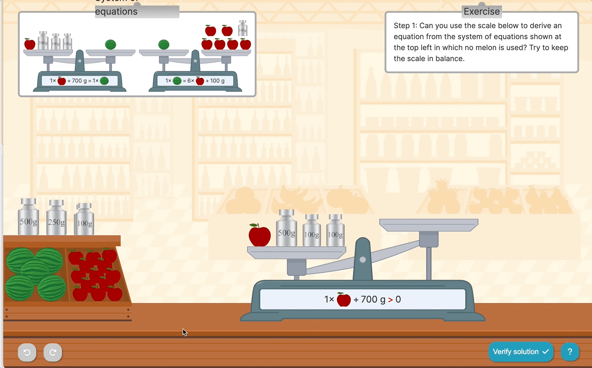
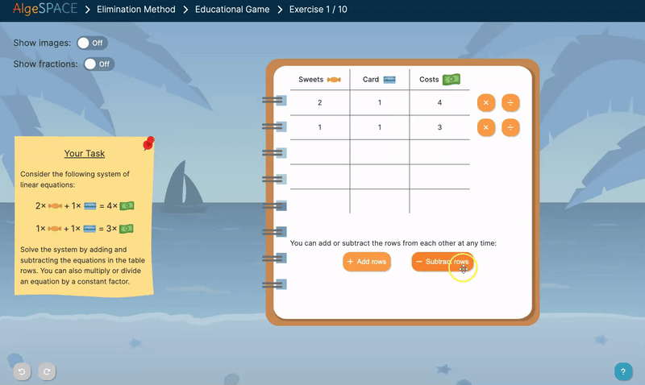
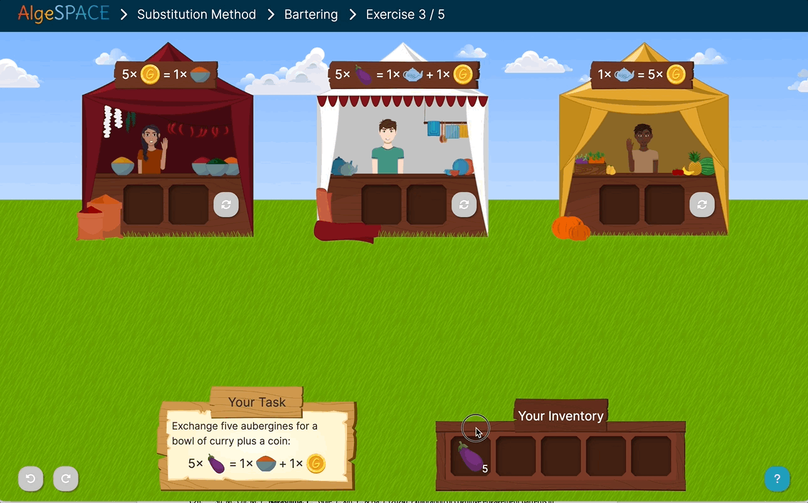
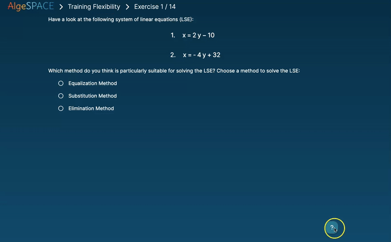

Project
AlgeSPACE
Algebra Scaffolding with Pedagogical Agents and Concrete Examples
In this multi-stage research project, we design and study an adaptive mathematics tutoring environment for algebra learning. The system combines real-world concrete examples, support for strategic flexibility in problem solving, personalized pedagogical agents, and self-regulated learning scaffolds such as goal setting and motivational prompts.
Research Questions
- How might we design an interactive system that reflects both practical teaching goals (e.g., real-world examples, strategic flexibility in problem solving) and research goals (e.g., conceptual understanding and choice-making behaviors)?
- How would personalized, motivational pedagogical agents influence students’ learning outcomes and choice-making behaviors over time?
- How would adaptive goal-setting functionalities improve students’ self-regulated learning and motivation in a mathematics tutoring platform such as AlgeSPACE?
Learning Environment
AlgeSPACE provides four learning modules:

Elimination Method

Substitution Method

Flexibility Training
Scientific Outputs
- Parallel Design Framework. Nagashima, T., Bonaventura, K., & Su, M. (2024). Parallel Design: Achieving both Researchers' and Practitioners' Goals in the Design of an Interactive Learning System. PDF
- Empirical Findings (Journal Article). Su, M., Dang, B., Nguyen, A., & Nagashima, T. (2025). Choice-making in an adaptive learning system with motivational pedagogical agents. npj Science of Learning, 10, 77. PDF
- Conference Presentation. Su, M., Dang, B., Nguyen, A., & Nagashima, T. (2025, August). Motivational agents help novices regulate, but experts keep repeating errors. Slides/Poster
- ICLS Contribution. Su, M., Bonaventura, K., & Nagashima, T. (2025, June). Fostering Strategic Choice-Making Through Motivational Pedagogical Agents in an Adaptive Learning System. PDF
Project Team
Developers
Katharina Bonaventura (AlgeSPACE 1.0)
Helene Nuettgens (Personalized version)
Samarth Joshi (Goal-setting version)
Researchers
Prof. Tomohiro Nagashima (PI and Project Lead)
Dr. Man Echo Su (Postdoc and Project Management)
Prof. Andy Nguyen, Ms. Belle Dang (Collaborator at Oulu University)
Prof. Maria Theobald (Collaborator at Trier University)
Ms. Nina Quach, Ms. Meiyi Chen
School Partners
Teacher collaborators in Germany (including Saarland, Hessen, and Rheinland-Pfalz) supporting co-design and classroom studies.